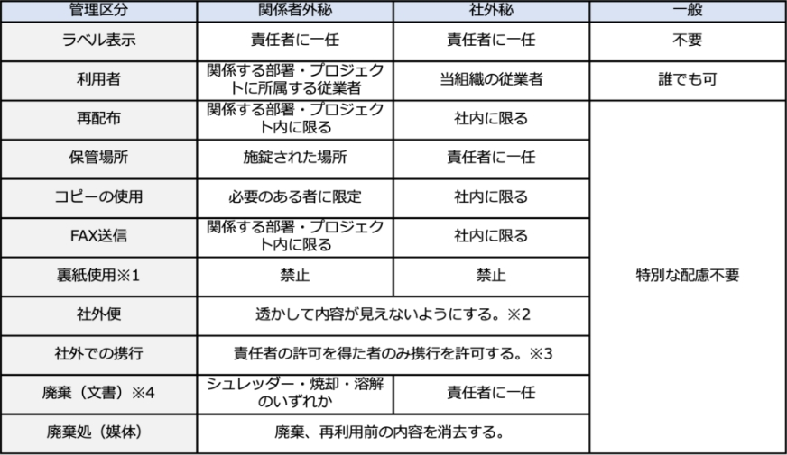
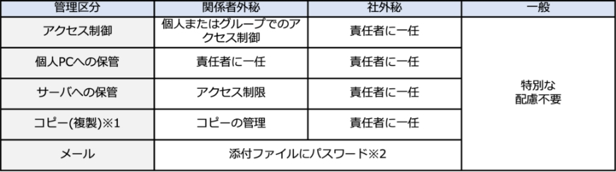
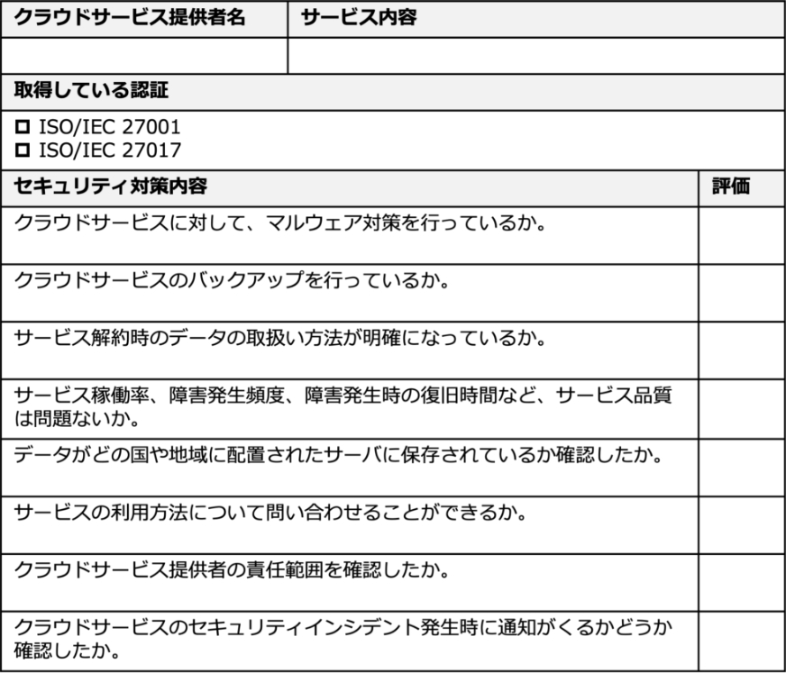
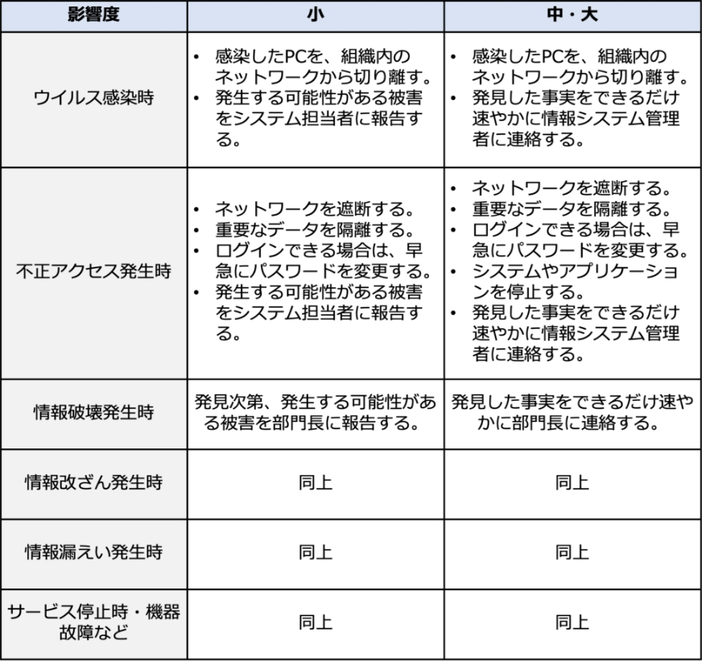
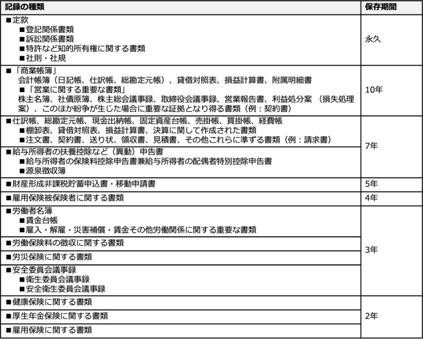

14-1-2. 実施手順の策定
管理策（対策基準）をもとに策定されたセキュリティ対策の実施手順の例を、それぞれ紹介します。実施手順は、組織の内部文書として作成します。実施手順が抽象的で理解しづらい場合、従業員は具体的に何を遵守して行動すればよいかわからず、セキュリティ対策が不十分になってしまいます。従業員に対してわかりやすい実施手順を策定するよう心掛けることが大切です。
実施手順を策定する際は、ISO/IEC 27002に記載されている各管理策の手引が参考になります。手引の内容をもとに、実施手順の例を紹介します。この例と、ISO/IEC 27002の内容を参考に、自社に適した実施手順を策定してください。
5.1 情報セキュリティのための方針群
実施手順（例）
情報セキュリティ委員会は、「情報セキュリティ方針」などの情報セキュリティに関する方針を定義し、トップマネジメント（経営層）の承認を得る。また、情報セキュリティ委員会は、情報セキュリティに関する方針を適用範囲内の全従業者に公表する。また、「情報セキュリティ方針」は外部関係者にも公表する。
情報セキュリティ委員会は、「情報セキュリティ方針」以外の情報セキュリティのための方針群を、本手順において定める。方針群には以下を含める。
- a.モバイル機器の方針
- b.テレワーキング
- c.アクセス制御方針
- d.暗号による管理策の利用方針
- e.クリアデスク・クリアスクリーン
- f.情報転送の方針（および手順）
- g.セキュリティに配慮した開発のための方針
- h.供給者関係のための情報セキュリティの方針
ワンポイントアドバイス
情報セキュリティに関する方針は、関連する従業員および利害関係者に認識されることが大切です。
5.2 情報セキュリティの役割及び責任
実施手順（例）
トップマネジメント（経営層）は、情報セキュリティに関連する役割を持つ情報セキュリティ委員会、内部監査責任者に対して、以下の責任および権限を割り当てる。また、トップマネジメント（経営層）は、これらの役割、責任および権限を従業者に伝達する。情報セキュリティの運用に際し、トップマネジメント（経営層）は、情報セキュリティ委員会の設置および運営を実施する。
情報セキュリティ委員会の役割は以下の通り。
- a.リスク対応計画の策定
- b.情報セキュリティ実行体制の構築
- c.選択された管理策の実施
- d.教育・訓練
- e.運用の管理
- f.経営資源の管理
- g.情報セキュリティ事象・セキュリティインシデントの管理
- h.関連当局との連絡（警察・審査機関・コンサル会社・取引先・委託先など）
情報セキュリティ委員会の責任および権限は以下の通り。
役割
責任および権限
情報セキュリティ委員会責任者
管理策の実施・運用について統括する。
管理策の成果をトップマネジメント（経営層）に報告する。
教育責任者
管理策に関する教育計画の立案と実施を行う。
部門管理者（運用委員）
情報セキュリティの部門代表者として、部門を管理する。
情報システム管理者
情報システム部門の管理者で、情報システム管理に関する規定・規則に従い、情報セキュリティを維持するための安全管理対策を実施する。
文書管理責任者
管理策に関する文書や記録などの維持・管理を行う。
内部監査責任者の責任および権限は以下の通り。
内部監査責任者は、管理策とその実施状況に関わる監査を統括する責任と権限を有する。
ワンポイントアドバイス
従業員が少ない場合は、文書管理責任者と教育責任者を同じ者にするなど、役割を兼任させて体制を構築することも有効です。
5.3 職務の分離
実施手順（例）
- a.当組織は、申請者または作業者と、承認者を分離するように組織設計する。
- b.従業員の制約により兼任せざるを得ない場合、別部門などによる監視を行うことを条件に、兼任できる。
ワンポイントアドバイス
小さな組織で、職務の分離が困難である場合には、他の管理策（例：活動の監視、監査証跡、管理層による監督）を考慮することが大切です。
5.4 経営陣の責任
実施手順（例）
トップマネジメント（経営層）はすべての従業者に対し、情報セキュリティ方針、各実施手順、並びにその他情報セキュリティに関する要求事項の遵守を求める。
ワンポイントアドバイス
情報セキュリティ方針、各実施手順、その他情報セキュリティに関する要求事項が、すべての従業員に認識されることが大切です。
5.5 関係当局との連絡
実施手順（例）
情報セキュリティ委員会は、関係当局およびその連絡先を「連絡先一覧表」に特定し、必要時に容易に連絡がとれる体制を確立・維持する。
関係当局
連絡手段
URL
主目的
【IPA】コンピュータウイルス届出窓口、コンピュータ不正アクセス届出窓口
ウイルス発見・感染の届出
virus@ipa.go.jp
不正アクセスの届出
crack@pa.go.jp
ウイルス感染や、不正アクセスによる被害を報告するため。
【IPA】情報セキュリティ安心相談窓口
TEL:03-5978-7509（受付時間10:00～12:00、13:30～17:00 土日祝日・年末年始は除く）anshin@ipa.go.jp
ウイルス感染や不正アクセスに関する技術的な内容の相談に対して、アドバイスをもらうため。
【警視庁】サイバー犯罪相談窓口
TEL:03-5805-1731
受付時間：午前8時30分から午後5時15分まで（平日のみ）
サイバー犯罪被害について相談するため。
ワンポイントアドバイス
セキュリティインシデントを時機を失せずに報告するために、関係当局の連絡方法を明確にすることが大切です。
5.6 専門組織との連絡
実施手順（例）
情報セキュリティ委員会は、専門組織およびその連絡先を「連絡先一覧表」に特定し、必要時に容易に連絡がとれる体制を確立・維持する。
専門組織
情報の入手方法
URL
主目的
【IPA】重要なセキュリティ情報
Webページを閲覧
危険性が高いセキュリティ上の問題と対策に関する最新情報を収集するため。
【個人情報保護委員会】注意情報一覧
Webページを閲覧
セキュリティ・個人情報・マイナンバーに関する、注意事項を把握するため。
ワンポイントアドバイス
脆弱性や攻撃など情報セキュリティに関する情報を適時入手するために、入手方法を明確にすることが大切です。
5.7 脅威インテリジェンス
実施手順（例）
1.既存または新たな脅威に関する情報を、次に示す専門機関から収集する。
- IPA
- JVN (Japan Vulnerability Notes)
- JPCERT/CC
- ISAC (Information Sharing and Analysis Center)
- 個人情報保護委員会
収集する情報は、以下のようなものとする。
- 変化する脅威の状況に関する情報（例：攻撃者や攻撃の種類）
- 攻撃の方法、使用されるツールや技術に関する情報
- 特定の攻撃に関する詳細な情報
2.収集した情報を分析する。
脅威が、自組織にどのような影響を及ぼすか把握するために、収集した情報をもとにリスクアセスメントを実施する。
3.リスク低減の処置を実施する。
リスクアセスメントの結果をもとに、ファイアウォール・侵入検知システム・マルウェア対策ソリューションなど、技術的に予防、検知を行うための管理策を採用する。
ワンポイントアドバイス
情報の収集から、リスク低減処置を実施するまでの手順を明確にすることが大切です。
5.8 プロジェクトマネジメントにおける情報セキュリティ
実施手順（例）
- a.プロジェクト管理者は、プロジェクトにおける必要な管理策を特定する。
- b.プロジェクトにおける必要な管理策は、プロジェクト終了後も考慮する。
- c.プロジェクト管理者は、情報セキュリティ責任者を任命する。
- d.
情報システム管理者は、業務用情報システムの導入・改善にあたっては、必要に応じて情報セキュリティ上の要求事項を、要件定義書や提案依頼書などにより文書化する。
文書には下記から必要な事項を含める。- 情報システムの設置場所（環境・障害からの対策を含む）に関する事項
- 無停電電源装置などのサポートユーティリティに関する事項
- 保守契約に関する事項
- システムの冗長化に関する事項
- 通信、データの安全対策に関する事項
- 受け入れテストに関する事項
- アクセス権限に関する事項
ワンポイントアドバイス
プロジェクトが提供する製品またはサービスの情報セキュリティ要求事項は、情報セキュリティ方針、トピック固有の個別方針および規制から遵守すべき要求事項を決定することが大切です。
5.9 情報及びその他の関連資産の目録
実施手順（例）
- a. 情報セキュリティ委員会は「資産目録」を作成し、当組織における重要な資産を識別する。また「資産目録」を「年間計画表」に従い、最低年1回見直す。
- b. 情報セキュリティ委員会は「資産目録」において特定した資産に対し、同目録上に管理責任者（リスク所有者）を記載することで管理責任を明確にする。
ワンポイントアドバイス
資産の管理責任を個人またはグループに割り当て、管理責任を明確にすることが大切です。
5.10 情報及びその他の関連資産の利用の許容範囲
実施手順（例）
情報の区分ごとの取扱いルールを以下に示す。
情報の区分は「5.12 情報の分類」で、ラベル表示については「5.13 情報のラベル付け」で定める。
【文書・メディアなどの場合】
※1 個人情報の記された書類の再利用は禁じる。
※2 紙や記憶媒体による個人情報を、郵便や宅配便などにより移送するときは、誤配、紛失などの危険を最小限にするため、ポストへの施錠、受け取り確認が可能な移送手段の選択などの措置を講じる。
※3 個人情報を外部へ持ち出す際は、目的地以外へ立ち寄らず、手放さない、車中に放置しないよう徹底する。
※4 紙に記された個人情報の廃棄は、シュレッダーによる裁断・焼却・溶解いずれかの方法で処分する。また、廃棄前の一時保管場所からの紛失・盗難防止のため、重要書類は即廃棄する。
【システム内情報】
※1 コピーは、バックアップの必要上および業務上やむを得ない場合の必要最小限の範囲にとどめるものとする。
※2 取引先との合意がある場合は、その合意に従う。
ワンポイントアドバイス
許容できる行動、許容できない行動を明確に定めることが大切です。
5.11 資産の返却
実施手順（例）
情報セキュリティ委員会は、退職者が発生した際に、以下の対応を部門長に要求し、実施されたことを確認する。
- a.名刺、社員証、IDカードなどの返却
- b.会社が支給したノートPCや携帯電話などの返却
- c.紙で保管する書類の返却、または廃棄
ワンポイントアドバイス
返却するすべての情報およびその他の関連資産を明確に特定し、文書化することが大切です。
5.12 情報の分類
実施手順（例）
情報は一般・社外秘・関係者外秘で分類する。
情報セキュリティ委員会は、情報の分類を最低年1回見直す。
ワンポイントアドバイス
分類は、情報の侵害が組織に与える影響のレベルによって決定できます。分類体系で定義されたレベルには、分類体系の適用において意味をなすような名称を付けることが大切です。
5.13 情報のラベル付け
実施手順（例）
従業員は、取扱う情報が一般・社外秘・関係者外秘の区分のうち、どれに該当するか認識できる必要がある。
書類の分類を容易に認識できない場合は、以下のいずれかの方法により適切なラベル付けを行う。
- a.分類をシールなどの色により識別する。
- b.ファイルなどに分類を記入（またはスタンプ）することで識別する。
- c.分類ごとに収納場所を分ける。
ワンポイントアドバイス
ラベル付けは、「5.12 情報の分類」で確立した分類体系を反映していることが大切です。
5.14 情報転送
実施手順（例）
- a. 重要な情報を外部に送信する場合は、セキュアなファイル共有サービスを利用する。やむを得ずファイル共有サービスが利用できない場合は、受信者と合意したうえで、メールに添付して送信する。
- b. 重要な情報を外部にFAXにて送信する場合は、入力した番号と、名刺や送り状を照合し、間違えがないことを確認してからスタートボタンを押す。また頻繁に送信する送り先は短縮ダイヤルに登録する。
- c. 認可されていない者に聞かれる可能性がある場所で、重要な情報を口頭で伝えることは禁じる。
- d. 重要な情報を外部に郵送する場合は、配達記録郵便や宅配便など配達記録が残る手段をとる。
- e. 重要な情報を格納した媒体は、手渡しを原則とし、やむを得ず郵送する場合は、十分な梱包により媒体を保護する。
- f.
個人情報の授受記録
- 紙や記憶媒体による個人情報の受け渡しに際しては、送付票や受領証などで受け渡しの完了を確認する。
- 電子メールにより個人情報の受け渡しを行う際には、送信済みメールおよび、受領確認の返信メールのいずれかまたは両方を受け渡し記録とする。
- g.
電子メールの利用
- 電子メールは会社所定のソフトを使用し、その利用は業務上必要な場合に限定する。
- 社外メーリングリストへの参加は、原則禁止とする。
- 重要な情報（社外秘以上）はメール本文に記載して送信せず、aに従う。
- h.
情報転送に関する合意
- 情報の転送先との間で、情報転送の手段について、あらかじめ合意を得る。
- 重要な情報を外部にメール添付またはFAXにて送信する場合は、必要に応じて送信予告、到着確認の電話を掛ける。
- 宅配便業者を利用する場合は、会社が指定する業者を利用する。
- i. 電子的メッセージ通信
ワンポイントアドバイス
情報転送は、電子的な転送、物理的記憶媒体での送付および口頭での伝達によって行われる場合があります。情報転送の規則、手順を定めることが大切です。
5.15 アクセス制御
実施手順（例）
- a.業務に必要な者のみが情報にアクセスできるようにし、アクセス権限および操作権限は、認められた場合以外は与えないようにする。
- b.社内LANは、情報システム管理者の承認を得た従業員、装置に限り接続する。
- c.社内の情報システムへの外部からのアクセスは、ファイアウォールなどによって通信を制限する。
- d.外部から社内のサーバに接続する場合、VPN接続を使用する。
- e.
無線LANは物理的・論理的な認証、通信の暗号化などを施したうえで利用する。
- f.サーバ室へ入退を行う対象者に対して、入退資格を設け、資格のない者の立ち入りを禁じる。
- g.サーバ室は、常時施錠可能とし、入退資格のない者の立ち入りを禁じる。
ワンポイントアドバイス
アクセス制御規則を定めるには、「明確に許可していないことは、原則的に禁止する」という最も特権の小さい前提に基づいた規則を設定するようにすることが大切です。
5.16 識別情報の管理
実施手順（例）
- a.情報システムの利用者登録および登録削除は、当該利用者の属する部門長が申請し、情報システム管理者の承認を得る。
- b.利用者登録は業務上必要な範囲で従業者に付与する。
ワンポイントアドバイス
識別情報が不要になった場合、識別情報は時機を失せずに無効化または削除することが大切です。
5.17 認証情報
実施手順（例）
- a. 情報システム管理者は、利用者に仮パスワードを発行する場合、利用者本人のみが知ることができる方法で通知する必要がある。
- b. 情報システム管理者は、利用者に対し、仮パスワードを直ちに変更することを要求し、通知する。
- c.
秘密認証情報の利用
- 利用者は、英数字と記号を混在した10文字以上のパスワードを設定し、アルファベットには大小文字の両方を含める必要がある。
- 他人に容易に推測されるようなわかりやすいパスワードの使用を禁じる。
- 他のサービスと重複するパスワードの利用を禁じる。
- 各システムにおける管理者IDのパスワードは、情報システム管理者において厳重に管理する必要がある。
- 利用者および情報システム管理者は、パスワードの代替もしくは補完のために、指紋などの生体認証、専用のアプリやメールなどを利用するワンタイムパスワードによる認証、PINコード・機器認証などを利用するパスキーによる認証方式を採用する。
- d.
パスワード管理システム
- パスワードの入力は対話式とする。
- パスワード入力時に画面に表示させないようにする。
ワンポイントアドバイス
パスワードを認証情報として使用する場合、IPAなどが推奨している強力なパスワードの作り方を参考にすることが大切です。
5.18 アクセス権
実施手順（例）
- a. 利用者のアクセス権は、重要情報に対しては必要最小限の者がアクセスするという原則のもとに、情報システム管理者が検討し、設定を行う。
- b. 情報システム管理者は、定期的（最低年1回）および必要時にアクセス権限の棚卸および見直しを行う。
- c. 退職者が発生した際は、業務に支障がないよう調整し、速やかに該当アカウントを削除する必要がある。申請は、当該従業員が最後に所属した部門の長がアクセス権限の削除を申請し、情報システム管理者、またはその指名する従業員が削除する。
- d. 他部署への移動が生じた際は、aの手順に従い削除する。また、新規のアクセス権限は移動先部門の長が申請し、同様の手順に従い登録する。
ワンポイントアドバイス
物理的および論理的なアクセス権の定期的レビューでは、同じ組織内での異動、昇進、降格、退職後の利用者のアクセス権、および特権的アクセス権の認可について考慮することが大切です。
5.19 供給者関係における情報セキュリティ
実施手順（例）
- a.
当組織における供給者には、以下がある。
- ISP、電話サービス、IT機器などのサービス提供者
- 情報システムの開発・保守における外部委託先
- 会計、税務、法律などの専門サービス提供者
- 清掃業者、廃棄業者
- クラウドサービス
- b. 情報セキュリティ委員会は、部外者・外部組織によるオフィスエリアや情報システムへのアクセスを許可する際に生じる可能性があるリスクを考慮し、情報セキュリティ上の要求事項を明確にする。
ワンポイントアドバイス
供給者が提供する製品およびサービスの使用に関連するセキュリティリスクに対処するためのプロセスおよび手順を特定し、実施することが大切です。
5.20 供給者との合意における情報セキュリティの取扱い
実施手順（例）
- a.
提供されるサービスの利用は、次の手順に従い行う。
- 1.「委託先審査票」による評価・選定を行う。
- 2.
情報セキュリティ要求事項を考慮し、次の事項を含む契約を締結する。
- 機密保持契約などの情報の取扱いに関する契約
- 使用許諾に関する取り決め、コードの所有権および知的所有権（開発の場合）
- 実施される作業場所および入退室管理
- 外部委託先が不履行となった場合の預託契約に関する取り決め
- 3.情報セキュリティ委員会は、「5.19 供給者関係における情報セキュリティ」において検討したリスクを考慮し、必要に応じて第三者との間で契約を締結する。
- b. クラウドサービスを介して重要資産を取扱う際は、利用者は多要素認証を有効にしてセキュリティを強化する必要がある。
ワンポイントアドバイス
組織と供給者の間で情報セキュリティ要求事項を満たす義務に関し、当事者間で合意を確立し、文書化することが大切です。
5.21 ICTサプライチェーンにおける情報セキュリティの管理
実施手順（例）
- a. ICT製品・サービスの供給者との契約には、必要に応じて再委託に関する事項を盛り込む。
- b. クラウドサービスの利用にあたっては、クラウドサービス提供者の事業継続性、および以下のサービスに関する情報セキュリティ事項を考慮のうえ、クラウドサービスを選定する。
ワンポイントアドバイス
信頼できる供給源からICTを取得する手順を明確にすることが大切です。
5.22 供給者のサービス提供の監視、レビュー及び変更管理
実施手順（例）
- a. 情報セキュリティ委員会は、サービスの供給者に対して、あらかじめ定められた頻度（最低年1回）において契約の履行状況ならびに「委託先審査票」による遵守状況の確認を行う。
- b. サービスの供給者との間で契約内容やサービスレベルに変更があった場合、変更点を受け入れることができるか否かを検証し、契約内容の見直しを実施する。
ワンポイントアドバイス
サービスの提供において不完全な点があった場合は、適切な処置をとることが大切です。
5.23 クラウドサービスの利用における情報セキュリティ
実施手順（例）
クラウドサービスを導入する際、以下の評価表をもとにクラウドサービスを評価し、自社のセキュリティ要件事項を満たしているか確認する。
（評価）〇：できている △：部分的にできている ×：できていない
ワンポイントアドバイス
クラウドサービスの利用は、クラウドサービス提供者とクラウドサービス利用組織との間の情報セキュリティに関する責任の共有および分担、共同作業を伴う可能性があります。クラウドサービス提供者と、クラウドサービス利用組織の両方の責任を適切に定義し、実践することが大切です。
5.24 情報セキュリティインシデント管理の計画策定及び準備
実施手順（例）
セキュリティインシデントへの対応は、以下の手順で行う。
管理層の責任のもと、以下の手順を関係者に伝達する。
ワンポイントアドバイス
セキュリティインシデントへの対応を実行するために役割および責任を決定し、関連する関係者に効果的に伝達することが大切です。
5.25 情報セキュリティ事象の評価及び決定
実施手順（例）
- a. セキュリティの弱点、脅威に気付いた場合もしくは疑いを持った場合は、情報セキュリティ委員会に報告する。この際、自己で解決することよりも報告を優先させる。
- b.
情報セキュリティ事象の評価は、以下の表に従い、部門管理者（情報セキュリティ委員会メンバー）が行う。
- 大、中の項目に該当する情報セキュリティ事象は、セキュリティインシデントとして分類する。
- 項目の大、中、小の順に優先順位を付ける。
ワンポイントアドバイス
情報セキュリティ事象をセキュリティインシデントに分類する基準を明確に定めることが大切です。
5.26 情報セキュリティインシデントへの対応
実施手順（例）
セキュリティインシデントへの対応手順は以下の表に従う。
ワンポイントアドバイス
セキュリティインシデント対応に関する手順を確立し、すべての関連する利害関係者に伝達することが大切です。
5.27 情報セキュリティインシデントからの学習
実施手順（例）
- a. 情報セキュリティ委員会は、セキュリティインシデントを管理・分析し、問題があれば、計画を立ててトップマネジメント（経営層）へ提議する。計画には、解決に向けての処置方法・費用・実施予定日・責任者を明確にする。
- b. 将来のセキュリティインシデントの起こりやすさや影響を減らすため、情報セキュリティ委員会は、セキュリティインシデントから得られた知識を活かして「6.3 情報セキュリティの意識向上、教育及び訓練」を強化・改善する。
ワンポイントアドバイス
セキュリティインシデントの形態、規模および費用を定量化および監視するための手順を確立することが大切です。
5.28 証拠の収集
実施手順（例）
情報セキュリティ委員会は、情報システムの事故が特定の個人、または組織に起因するもので、事後処置が法的処置に及ぶ可能性のある場合には、必要な証拠の収集、保全に努める。
ワンポイントアドバイス
懲戒処置および法的処置のために情報セキュリティ事象に関連する証拠を取扱う場合は、内部の手順を定めて従うことが大切です。
5.29 事業の中断・阻害時の情報セキュリティ
実施手順（例）
- a.
資産のリスク分析
「資産目録（情報資産管理台帳）」で特定した情報資産のうち、可用性の評価値が3の重要資産を情報セキュリティ継続のリスク分析対象とする。※可用性の評価値は、「11-2-2. リスク特定」で記載している方法で算出する。
- b.
aにおいて登録した資産に対して、以下のリスクについて考慮する。
- 地震・火災・洪水などの自然災害
- 人的なミス
- システム障害
- 健康上の問題
- c. bのリスクが生じた際に影響を受ける業務プロセスを特定し、リスクが発生した場合のシナリオを作成する。
- d. リスクが生じた場合の影響度と、リスクが発生する可能性について検討し、検討結果に基づき優先順位を決定する。
- e.
dにおいて、優先順位が高いと判断したものに対して「事業継続計画書」を作成し、トップマネジメント（経営層）の承認を得る。
「事業継続計画書」には以下の内容を含む。- 実行開始条件（リスクシナリオの発生）
- 非常時手順（発生時の連絡手順）
- 回復手順（復旧のための手順）
- 回復目標（目標時間を必要に応じて決定）
- 再開手順（回復後のリハーサル手順）
- 試験のスケジュール
- 教育（教育が必要な場合はその計画）
- f.
策定した計画および手続について試験を実施し、試験の結果、必要があると判断した場合は計画を更新する。試験は以下のいずれかの方法、またはその組み合わせにより行う。
- 机上試験
- 模擬試験
- 技術的回復試験
- 代替施設における回復試験
- 供給者施設およびサービスの試験
- g. 情報セキュリティ委員会は、事業継続に関する試験を最低年1回、継続的に実施する。
ワンポイントアドバイス
事業の中断または阻害時に、重要な事業プロセスの情報セキュリティを維持または復旧するために、計画を策定、実施、試験、レビューおよび評価することが大切です。
5.30 事業継続のためのICTの備え
実施手順（例）
- a. ビジネスインパクト分析（不測のインシデントによって業務やシステムが停止した場合、会社の事業にどのような影響があるかを分析すること）を行い、事業継続が困難な状況を特定する。
- b. 事業が中断・停止になった際の対応手順を策定し、文書化する。
- c. 策定した対応手順が有効であることを確実にするため、あらかじめ定めた間隔（年1回以上）で試験を実施し検証する。
ワンポイントアドバイス
組織がICTサービス事業の中断・阻害を管理する方法を詳述した対応および復旧手順を含むICT継続計画を、演習および試験を通じて定期的に評価、または経営陣が承認することが大切です。
5.31 法令・規制及び契約上の要求事項
実施手順（例）
- a. 情報セキュリティ委員会は、当組織が遵守すべき法令、規制、および契約上の要求事項を識別し、「情報セキュリティに関する法令規制一覧表」に記載する。「情報セキュリティに関する法令規制一覧表」は最低年1回見直す。
- b. 情報セキュリティ委員会は、当組織の従業者が「情報セキュリティに関する法令規制一覧表」を、必要に応じていつでも参照できる状態にする。
- c. 特定した要求事項を満たすために、必要に応じて教育などのテーマとする。
- d. 暗号化した装置を輸出する場合、または海外に持ち出す場合、該当する法規制について調査を行い、必要であれば対応を行う。
情報セキュリティに関連する法律（例）
概要
特定電子メールの送信の適正化などに関する法律
利用者の同意を得ずに広告、宣伝または勧誘などを目的とした電子メールの送信を禁止している。
電子署名及び認証業務に関する法律
「本人による一定の条件を満たす電子署名」がなされた文書は、本人の手書署名・押印がある文書と同様、真正に成立したものと推定されることが定められている。
著作権法
プログラムやマニュアル、ホームページなどは、著作権の対象であり、無断での複製は、著作権法の侵害になる。
不正アクセス禁止法
不正アクセス行為や、不正アクセス行為につながる識別符号（ID、パスワード）の不正取得・保管行為、不正アクセス行為を助長する行為などを禁止している。
刑法
無断でデータを改ざん・破壊する行為や、虚偽の金融機関を名乗ったサイトや電子メールを使い、金銭をだまし取るような行為などは、刑法に違反する。
ワンポイントアドバイス
総務省のWebサイト「国民のためのサイバーセキュリティサイト サイバーセキュリティ関連の法律・ガイドライン」で、サイバーセキュリティに関する代表的な法律が紹介されています。
5.32 知的財産権
実施手順（例）
- a. 知的財産権を保護するためのルールを策定し、組織内で教育・啓発活動を行う。
- b. 知的財産権を侵害する行為を禁止する。
- c. 知的財産権を侵害する行為が発生した場合には、速やかに是正措置を講じる。
- d. ソフトウェアなどの使用許諾計画を遵守する。
- e. 情報システム管理者は、パッケージソフトのライセンス管理を適切に行う。
ワンポイントアドバイス
知的財産権には、ソフトウェアまたは文書の著作権、意匠権、商標権、特許権およびソースコード使用許諾権が含まれます。
5.33 記録の保護
実施手順（例）
当組織における記録は、関連する法令に基づき次表の保存期間にわたり、消失、破壊、改ざん、不正なアクセス、流失などがないように適切に保存する。
ワンポイントアドバイス
記録は、記録の種類（会計記録、商取引記録、人事記録、法的記録など）によって分類し、それぞれに保存期間の詳細と、物理的または電子的な保存が可能な保存媒体の種類を記載することが大切です。
5.34 プライバシー及びPIIの保護
実施手順（例）
個人情報は、「5.10 情報およびその他の関連資産の利用の許容範囲」の取扱いルールに従い、厳重に取扱う。
ワンポイントアドバイス
プライバシーの保持およびPII保護のための手順を策定および実施することが大切です。
5.35 情報セキュリティの独立したレビュー
実施手順（例）
- a. 年に1度、内部監査により独立したレビューを行う。
- b.
以下に例示する、情報セキュリティに影響のある変化が生じた場合も、内部監査により独立したレビューを行う。
- 事業の追加/変更、業務手順の大幅な変更
- 住所変更、拠点の新設
- 情報セキュリティに関する主たる担当者の変更
- 関係する法令・規制、または契約の大幅な変更
ワンポイントアドバイス
独立したレビューにおいて、情報セキュリティに関して取組が不十分であると明確になった場合には、経営陣は是正処理を発議することが大切です。
5.36 情報セキュリティのための方針群、規則及び標準の順守
実施手順（例）
- a. 情報セキュリティ委員会は、セキュリティに関する手順や実施標準が正しく実施されていることを確実にするため、「運用チェックリスト」にて、定期的（3ヶ月ごと）に点検を行う。
- b. 情報セキュリティ委員会（入退管理責任者）は、入退記録が適切にとられているかどうかを月に1度確認する。また、入退管理が有効かつ適切に実施されていることを定期的に確認し、不備が発見された場合は速やかに是正の処置をとる必要がある。
- c. 情報システム管理者は、技術的な遵守事項が正しく実施されていることを確実にするため、上記のa、bに従い点検する。
ワンポイントアドバイス
是正処置が完了しない場合は、確認時に進捗状況を報告することが大切です。
5.37 操作手順書
実施手順（例）
情報処理設備の正確、かつ、セキュリティを保った運用を確実にするために、次の事項を明記した手順書を文書化し、必要に応じて利用者が参照できるようにする。
- a. システムが故障した場合の再起動および回復の手順
- b. 記憶媒体の取扱い手順
- c. バックアップの取得手順
- d. 保守手順
- e. 容量、能力、パフォーマンスおよびセキュリティなどの監視手順
ワンポイントアドバイス
操作手順書は必要に応じてレビューし、更新することが大切です。
詳細理解のため参考となる文献（参考文献）